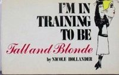

I'm in Training to Be Tall and Blonde
A Comics, Humor, Womens book. "The telephone company just released a study showing that women...
Download or read I'm in Training to Be Tall and Blonde in PDF formats. You may also find other subjects related with I'm in Training to Be Tall and Blonde.
- Filetype: PDF
- Pages: 150 pages
- ISBN: 9780312401658 / 312401655
rkEluo1AjOW.pdf
More About I'm in Training to Be Tall and Blonde
"The telephone company just released a study showing that women are unfit for lineman's jobs because their breasts get in the way and their behinds throw them off balance... Why are you laughing?" Just a sample of the genius that is Nicole Hollander...